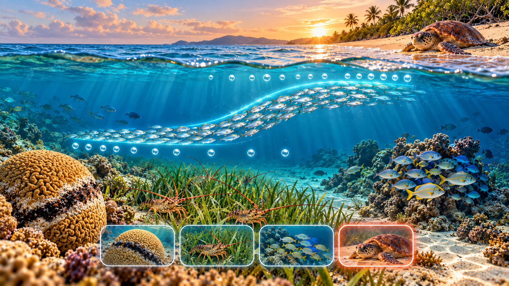

Cuestionario · GLM Binomial y Poisson
Bioestadística y Diseño Experimental · Semana 2 · 2026-II
Instrucciones
Este cuestionario acompaña el Taller · GLM Binomial y Poisson en R y cierra el bloque de bioestadística de la Semana 2. Son 12 preguntas de opción múltiple basadas en las Partes 1 a 5 del taller: componentes de un GLM y elección de la familia, GLM binomial (odds ratio, prueba de razón de verosimilitud, devianza explicada), GLM Poisson (razón de tasas, equidispersión), sobredispersión (cuasi-Poisson y binomial negativa) y el estudio de caso de nidos de tortuga caguama con esfuerzo de muestreo desigual (offset).
Cada pregunta tiene una pista opcional y, al responder, una explicación breve; se recomienda usarlas para repasar, no solo para obtener una calificación. El orden de las opciones cambia en cada intento.
Pregunta 1 de 12
Referencias
Las preguntas y escenarios de este cuestionario son de elaboración propia para este curso; no reproducen ejercicios ni datos de las fuentes citadas en el taller.